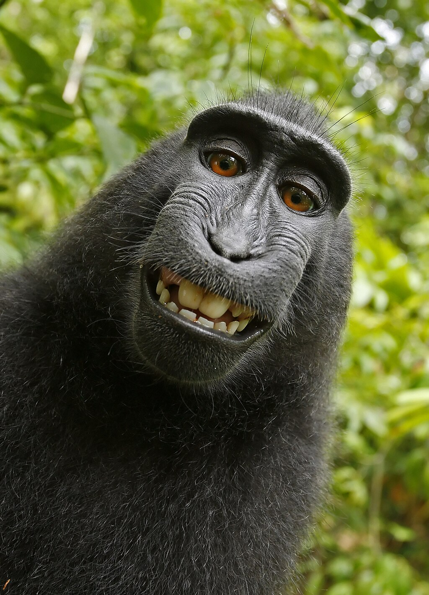

Copyright in the world of Generative Artificial Intelligence (AI)
The emergence of tools based on artificial intelligence, particularly in the realm of generative AI and Large Language Models (LLMs) such as ChatGPT, has already significantly changed the way that we create, consume, and think about content. However, this technological leap forward also raises a number of complex legal questions. My goal with this post is to provide a high-level roadmap of those issues, which I will then expand upon in subsequent posts.
My own background plays well to this: in addition to my academic credentials - my MSCS degree's specialization was "Interactive Intelligence", which includes a broad study of AI, including the currently impact that statistical AI mechanisms at the heart of Generative AI and Large Language Models, I also have extensive experience in the practical aspects of copyright law, including litigation against parties that illegally used content that I developed. In an academic setting I have experience using automated tools for detecting code plagiarism as part of a larger effort to reduce the rate of plagiarism in courses at Georgia Tech (see Collaboration Versus Cheating: Reducing Code Plagiarism in an Online MS Computer Science Program). In addition, as part of my work as an expert I have also considered AI in the context of other intellectual property issues (e.g., patent and trade secret) and those are deserving of separate discussion as well for future blog posts.
This blog post is the first in a series in which I will explore the intricate relationship between copyright law and AI. My goal is to provide useful insights for legal professionals, other technologists, and anyone interested in the future of intellectual property in the nascent age of AI tools and AI generated content.
Introduction
In this introduction, I will touch on:
- The evolution of copyright law as seen through the lens of technological changes
- An overview of generative AI and LLMs
- Emerging copyright issues in the context of AI
- The role of technology experts in AI-related copyright cases
- Approaches to evaluating copyright claims in the AI age
I will explore each of these topics in greater depth in my subsequent blog posts. For now, I will set the stage for this series of articles.
The Evolution of Copyright Law
Copyright law has evolved substantially in my lifetime, as new technologies emerge to change how we create and deliver content. While bookstores can still be found, the most common way of distributing printed content now is via electronic means, such as a PDF file that can be rendered on a device. Yet, I can recall as a young student visiting our local newspaper where they showed us their computer driven photo-lithography mechanism for creating the master templates that were then used to print the actual newspaper: this technology replaced hand-set moveable type that preceded it. Today, most people consume digital content via streaming: records, eight-track tapes, laser disks, CDs, DVDs, and Blu-Ray discs have largely become relics of a bygone era. Each of these has been accommodated as copyright law continues to evolve.
The advent of AI represents not only the most recent but also one of the most significant challenges to copyright law in recent decades. As I will explore in future posts, AI's ability to generate human-like content raises fundamental questions about creativity, authorship, and ownership that we need to address.
Understanding Generative AI and Large Language Models
Artificial intelligence, particularly generative AI and Large Language Models (LLMs), have emerged as significant manifestations of the power of artificial intelligence technology. LLMs are sophisticated systems, trained on vast amounts of data, that can produce human-like text and images, including computer code and even videos. Their capabilities are making it vastly easier to construct content by using an array of techniques: "deep fakes" can now be constructed using textual prompts and, with some iteration, can be used to blur the lines between reality and imagination.
In upcoming posts, I will delve into explaining how these technologies work and the specific challenges they pose to traditional copyright frameworks.
Copyright Issues in the AI Context
Evaluating how AI systems fit with respect to copyright law raises important questions to address:
- Authorships: Can AI-generated content be copyrighted, and if so, who owns the rights?
- Responsibility: If AI-generated content, such as deepfakes, is used to harm others (e.g., reputational harm), who is responsible for this impact?
- Infringement: How can we determine if AI-generated content infringes on existing copyrights?
- Fair Use: How does the doctrine of fair use apply to AI training data and the content generated by these AI-driven tools?
Liability in the Age of AI
The creation of deep fakes and other AI-generated content brings us to a crucial question: If AI-generated works are not copyrightable, who bears responsibility for their creation and dissemination?
This issue is reminiscent of a fascinating legal precedent involving a photograph taken by a macaque monkey. In 2018, a U.S. court ruled that the monkey could not own the copyright to the selfies it had taken using a wildlife photographer's camera. The court determined that copyright law does not extend to non-human animals.

This case offers an interesting parallel to AI-generated content. If an AI, like the monkey, cannot hold copyright, who is liable for its creations? The AI's creator? The user who prompted the creation? Or does the content fall into a new kind of legal limbo?
These questions become particularly pressing when we consider potentially harmful AI-generated content like deep fakes. If no one "owns" this content in a copyright sense, does that impact how we assign responsibility for its effects?
As I continue this blog series, I will delve deeper into these liability issues, exploring potential legal frameworks and their implications for creators, users, and AI developers alike.
The Role of Technology Experts in AI Copyright Cases
As AI-related copyright cases become more common, the role of expert witnesses with knowledge of the technology becomes increasingly important. These experts bridge the gap between complex technical concepts and legal principles, helping courts understand the nuances of AI systems and their implications for copyright law.
Evaluating Copyright Claims in the AI Era
Traditional methods of evaluating copyright claims, such as the abstraction-filtration-comparison test, need to be re-evaluated in light of AI technologies. In future posts, I will explore how these methodologies might be applied or modified in cases involving AI-generated content.
Looking Ahead
The intersection of AI and copyright law is a rapidly evolving field. As legislators, courts, and technology companies grapple with these issues, it's crucial for professionals in both the legal and tech sectors to stay informed and engaged.
In the coming weeks, I will explore each of these topics in greater depth, providing insights and analysis to help navigate this complex landscape. I will also touch on related issues such as AI's impact on patents, trademarks, and other forms of intellectual property.
I invite you to join me on this journey of exploration and discovery. Whether you're a legal professional, a technologist, or simply curious about the future of AI and copyright, there's much to learn and discuss.
Stay tuned for my next post, where we'll dive deeper into the historical context of copyright law and its evolution in response to technological change.